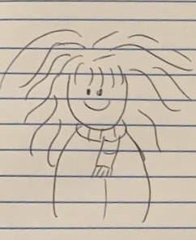

==$0
HERMIONE GRANGER

DEMOGRÁFICOS
Hermione Jean Granger. 19 de septiembre de 1979) es una bruja hija de muggles. El Sr. y Sra. Granger son dentistas en el mundo muggle. A los once años descubrió su don mágico y fue aceptada en el Colegio Hogwarts de Magia y Hechicería. Hermione empezó sus estudios mágicos el 1 de septiembre de 1991, poco antes de cumplir doce años y fue seleccionada para la Casa Gryffindor. Posee una mente académica brillante, y demostró ser una estudiante superdotada.
DESCRIPCIÓN
Hermione tiene el pelo castaño, largo y enmarañado, los ojos marrones, e incisivos bastante grandes. A pesar de que nunca destacó por su aspecto físico (son varios los personajes que se han reído de ella por eso).
OBJETIVO
Convertirse en la mejor maga que haya existido.
FRUSTRACIONES
Siente el miedo y el rechazo por su origen muggle, Sus dientes los cuales se convirtieron en más grandes de lo normal.
MOTIVACIONES
Ser aceptada en Howarts.